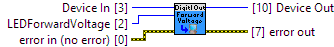

Device # Identification
The LEDForwardVoltage is the voltage that will be available to your LED.
LEDForwardVoltage that is closest to the forward voltage specified in the data sheet.
|
|
Device In Device # Identification |
|
|
error in (no error) error in can accept error information wired from VIs previously called. |
|
|
status status is TRUE (X) if an error occurred or FALSE (checkmark) to indicate a warning or that no error occurred. Right-click the error in control on the front panel and select Explain Error or Explain Warning from the shortcut menu for more information about the error. |
|
|
code code is the error or warning code. Right-click the error in control on the front panel and select Explain Error or Explain Warning from the shortcut menu for more information about the error. |
|
|
source source describes the origin of the error or warning. Right-click the error in control on the front panel and select Explain Error or Explain Warning from the shortcut menu for more information about the error. |
|
|
LEDForwardVoltage The forward voltage value
1011_0 (ver: 100, 101, 102, 103) Digital Output: Unsupported
1012_0 (ver: 600) Digital Output: Unsupported
1012_0 (ver: 601) Digital Output: Unsupported
1012_0 (ver: 602, 603, 604) Digital Output: Unsupported
1012_1 (ver: 605) Digital Output: Unsupported
1012_2 (ver: 605) Digital Output: Unsupported
1013_0 (ver: 800, 811, 820) Digital Output: Unsupported
1013_0 (ver: 821, 823) Digital Output: Unsupported
1018_0 (ver: 824, 825, 826) Digital Output: Unsupported
1018_1 (ver: 826) Digital Output: Unsupported
1019_0 (ver: 826) Digital Output: Unsupported
1070_0 (ver: 826) Digital Output: Unsupported
1014_0 (ver: 700) Power Relay: Unsupported
1014_0 (ver: 704, 705, 706) Power Relay: Unsupported
1014_1 (ver: 707) Power Relay: Unsupported
1014_2 (ver: 707) Power Relay: Unsupported
1017_0 (ver: 100) Signal Relay: Unsupported
1017_1 (ver: 100) Signal Relay: Unsupported
1010_0 (ver: 903, 904) Digital Output: Unsupported
1018_2 (ver: 900, 901, 902, 903, 904) Digital Output: Unsupported
1019_1 (ver: 903, 904) Digital Output: Unsupported
1072_0 (ver: 903) Digital Output: Unsupported
1073_0 (ver: 904) Digital Output: Unsupported
1023_0 (ver: 200) Digital Output: Unsupported
1023_0 (ver: 200) LED Driver: Unsupported
1023_0 (ver: 200) Onboard LED: Unsupported
1023_0 (ver: 201, 202, 203, 204) Digital Output: Unsupported
1023_1 (ver: 205, 206) Digital Output: Unsupported
1023_0 (ver: 201, 202, 203, 204) LED Driver: Unsupported
1023_1 (ver: 205, 206) LED Driver: Unsupported
1023_0 (ver: 201, 202, 203, 204) Onboard LED: Unsupported
1023_1 (ver: 205, 206) Onboard LED: Unsupported
1024_0 (ver: 100, 101, 103) Digital Output: Unsupported
1024_0 (ver: 100, 101, 103) LED Driver: Unsupported
1024_0 (ver: 100, 101, 103) Onboard LED: Unsupported
1030_0 (ver: 100, 101, 200, 201, 202) LED Driver: Val: LED_FORWARD_VOLTAGE_3_2V
1031_0 (ver: 100, 101) LED Driver: Def: LED_FORWARD_VOLTAGE_2_75V
1032_0 (ver: 200, 201) LED Driver: Def: LED_FORWARD_VOLTAGE_2_75V
1202_0 (ver: 100) Digital Output: Unsupported
1203_0 (ver: 100) Digital Output: Unsupported
1202_0 (ver: 120, 121) Digital Output: Unsupported
1202_1 (ver: 123, 124) Digital Output: Unsupported
1203_0 (ver: 120, 121) Digital Output: Unsupported
1203_1 (ver: 123, 124) Digital Output: Unsupported
1202_2 (ver: 200, 201, 202, 203, 204) Digital Output: Unsupported
1203_2 (ver: 200, 201, 202, 203, 204) Digital Output: Unsupported
1219_0 (ver: 110, 111, 113) Digital Output: Unsupported
1220_0 (ver: 110, 111, 113) Digital Output: Unsupported
1221_0 (ver: 110, 111, 113) Digital Output: Unsupported
1222_0 (ver: 110, 111, 113) Digital Output: Unsupported
HUB0000_0 (ver: 117, 118, 119) Digital Output: Unsupported
HUB0000_0 (ver: 121, 125, 126) Digital Output: Unsupported
HUB5000_0 (ver: 102, 104, 105) Digital Output: Unsupported
SBC3003_0 (ver: 101, 102) Digital Output: Unsupported
SBC3003_0 (ver: 108, 109) Digital Output: Unsupported
OUT1100_0 (ver: 100) Digital Output: Unsupported
OUT1100_0 (ver: 110) Digital Output: Unsupported
LED1000_0 (ver: 104) LED Driver: Val: LED_FORWARD_VOLTAGE_3_2V
REL1000_0 (ver: 101) Power Relay: Unsupported
REL1000_0 (ver: 110) Power Relay: Unsupported
REL1100_0 (ver: 100) Digital Output Isolated: Unsupported
REL1100_0 (ver: 110) Digital Output Isolated: Unsupported
REL1101_0 (ver: 102) Digital Output Isolated: Unsupported
REL1101_0 (ver: 110) Digital Output Isolated: Unsupported |
||||||||||||||||||||||||||||||||||||||||||||||||||||||||||||||||
|
|
Device Out Same as Device In |
|
|
error out error out passes error or warning information out of a VI to be used by other VIs. |
|
|
status status is TRUE (X) if an error occurred or FALSE (checkmark) to indicate a warning or that no error occurred. Right-click the error out control on the front panel and select Explain Error or Explain Warning from the shortcut menu for more information about the error. |
|
|
code code is the error or warning code. Right-click the error out control on the front panel and select Explain Error or Explain Warning from the shortcut menu for more information about the error. |
|
source source describes the origin of the error or warning. Right-click the error out control on the front panel and select Explain Error or Explain Warning from the shortcut menu for more information about the error. |